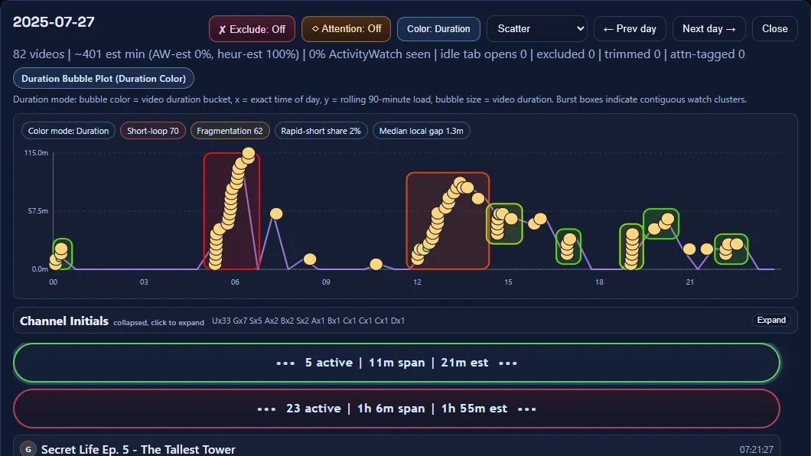
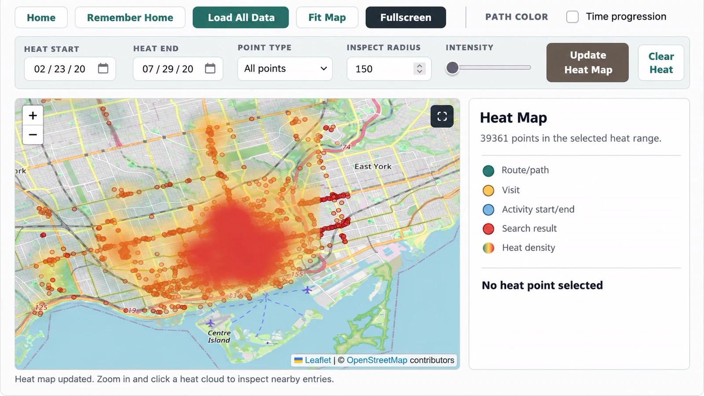
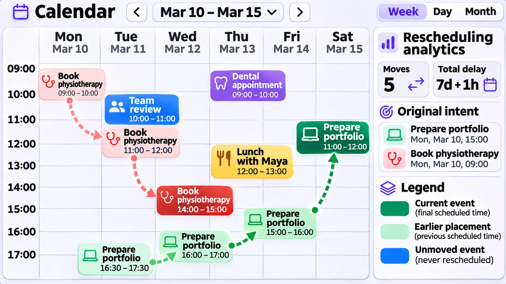
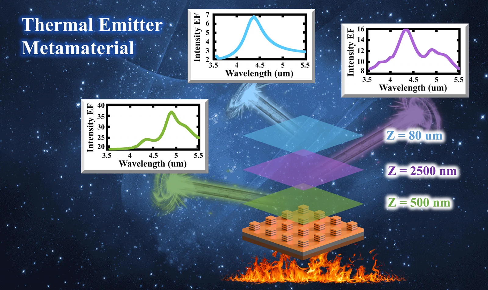
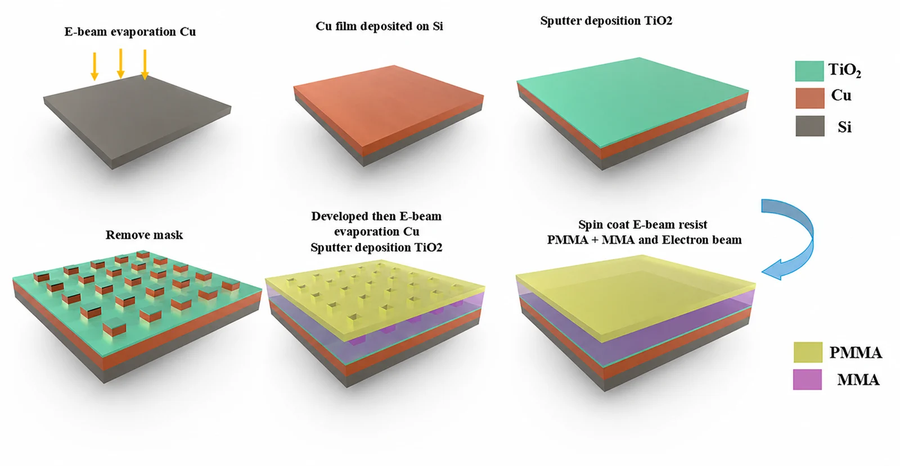
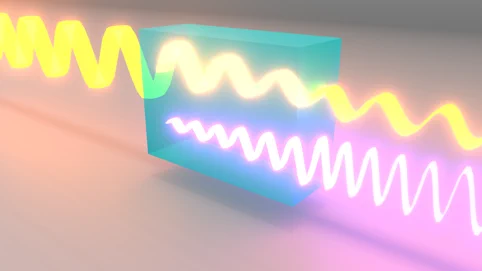
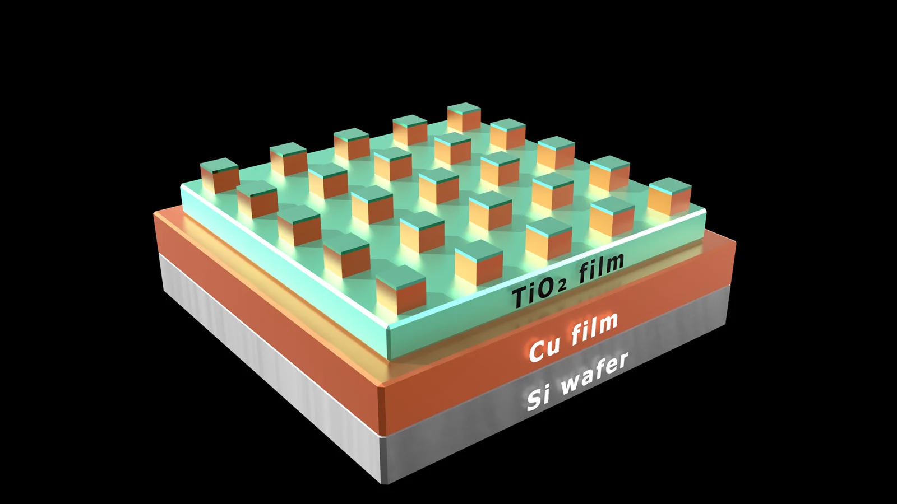

Ian Nastajus · Software systems · Data · Visualization
Systems
in motion.
I build tools that turn scattered personal archives, difficult signals, and technical ideas into interfaces you can explore.
Enter the portfolio- Operations
- Interpretation
- Illumination
Scroll to move through the systems
One · Operations
Google
Operations Hub
A local-first control surface for Google-related archives and workflows—bringing service portals, private data tools, and exploratory interfaces into one coherent system.




Active Health and Sound Recorder modules; an active Timeline prototype; external YouTube and Photos projects; additional services at concept or idea stage.
Three · Illumination
Scientific
Visualizations
Blender modeling and technical-figure development for research-linked visualizations—layered materials, fabrication stages, optical fields, and composited scientific narratives.




The portfolio claims 3D modeling, rendering, and figure-development contributions. It does not claim scientific paper authorship. Exact publication-panel matching remains under review.